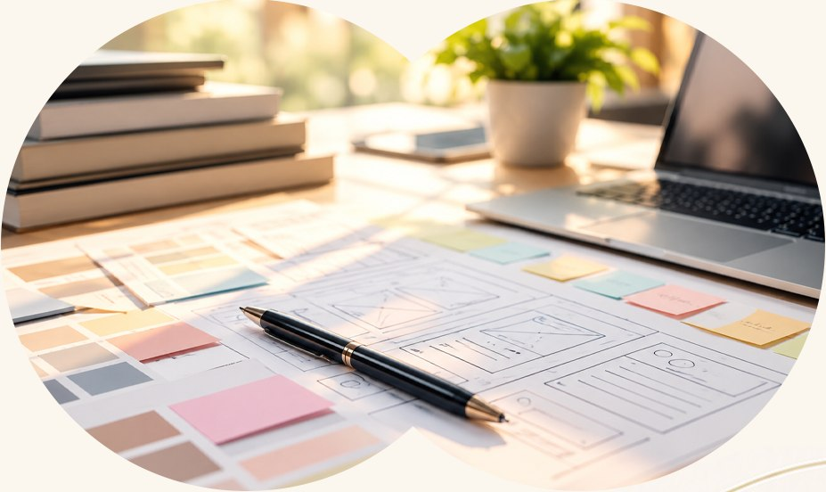

Concept
コンセプト
ホームページ、SNS、LINE。
何を使うかを決める前に、誰に何を届け、
どんな変化に繋げたいのか。
その目的から、一緒に考えます。

「作ること」が、
目的になっていませんか。
AIで誰でもHPを作れる時代だからこそ、「作る」が目的
になりやすい。大切なことは、今の課題を整理し、必要
な手段で伝わる形へ整えることです。
和叶の3つの考え方
-
作れることと、
伝わることは別。AIや制作ツールで形にできても、
誰に何を伝えるかを考える工程は
必要です。 -
作った先の行動まで
考える。知ってもらう、理解してもらう、
相談してもらう。
相手に望む行動
から導線を組み立てます。 -
手段を選ぶ前に、
現状を整理する。課題と目的を確かめ、今取り組む
ことの優先順位を決めます。
自分らしさを、言葉にする。
起業理念や存在意義。個人の信じることや価値観。
大切にしている軸を言葉にし、発信の土台を整えます。
相手の理解に合わせて、
整える。

何を、どの順番で伝えるか。
相手の疑問や迷いから、言葉とデザインを
組み立てます。
公開後の反応から、
次を考える。
発信して終わりにせず、相談や問い合わせに繋がる
流れを確認し、必要な改善を一緒に考えます。
Contact
あなたの大切にしている想いを、あなたらしく届く形へ。
まだ言葉になっていなくても大丈夫です。
あなたの「想い」や「価値観」を一緒に整理し、
必要な人へきちんと伝わる環境へ落とし込む
お手伝いをいたします。